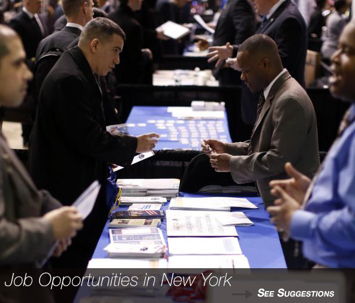
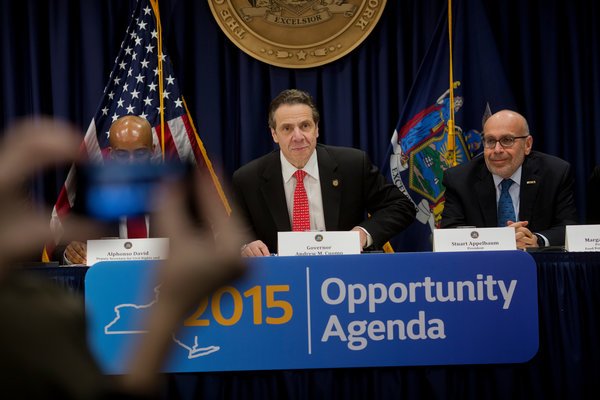

- 

 Gov. Andrew M. Cuomo said that in his State of the State he will propose making the minimum wage in New York among the highest in the country. Credit Victor J. Blue for The New York Times.
The minimum wage rate is the lowest hourly amount that can be paid to employees.
New York’s minimum wage has risen from $8 to $8.75 an hour, giving a boost in pay to some 700,000 workers.
The state is one of several raising its minimum pay rate in the new year, with increases taking effect Jan. 1 in Connecticut, Rhode Island, Massachusetts, Florida and other states.New York lawmakers approved the increase in 2013 as part of a series of steps to bring the wage to $9 on Dec. 31, 2015.
It could go up even higher if lawmakers pass another increase in the 2015 legislative session.Supporters of a higher minimum wage are calling for a $10.10-per-hour minimum and want to give cities like New York the authority to raise it even more.
Continuing to push for higher wages for the state's lowest-paid workers, Gov. Andrew M. Cuomo announced on Tuesday that all of the waiters, waitresses and others who work for tips in New YorkCity will soon get a raise of their minimum wage to $7.50 an hour. The state last increased the minimum wage in 2013, approving a three-year rollout that pushed the hourly rate to $8.75 from $7.25. That wage will rise to $9 an hour by 2016. But , Mr. Cuomo suggested that the rate of increase was too slow, saying “the wage gap has continued to increase.” Under his proposal, the wage would increase to $11.50 and $10.50 at the end of 2016.
The proposal, announced at a news conference in Manhattan, seemingly offered the governor a chance to refine his position regarding differing wages in differing parts of the state, noting it was the first time New York City would be allowed a different rate. Last year, Mr. Cuomo had dismissed suggestions that local governments could set their own minimum wages, saying that letting them do so could lead to a “chaotic situation.
| | ||||
| | Craigslist is a classified advertisements website with sections devoted to jobs, housing, personals, for sale, items wanted, services, community, gigs, résumés, and discussion forums. To start, click here -> http://newyork.craigslist.org/ | |||
| Indeed.com is an employment-related metasearch engine for job listing.The site aggregates job listings from thousands of websites, including job boards, staffing firms, associations, and company career pages.Indeed began allowing job seekers to apply directly to jobs on Indeed's site and offering resume posting and storage. To start, click here -> http://www.indeed.com/ | ||||
| Simply Hired is an employment website for job listings and online recruitment advertising network. The company aggregates job listings from thousands of sites across the Web including job boards, newspaper and classified listings, associations, social networks, content sites and company career sites. To start, click here -> http://www.simplyhired.com/ | ||||